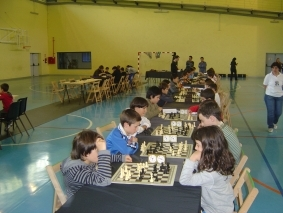

Agustin de Leitza Xake Elkartea |
| » hasiera » elkarteko bazkideak » taldekako txapelketa » azken txapelketak » loturak |
Kutxa txapelketa, lehenengo fasea Anoeta.09-05-25Aurten izan da gure mutilek KUTXA taldeko txapelketa jokatu duten lehen aldia, Urtzik eta Rubenek aurten ere jokatu dute bakarko finalak. Talde bat osatu dugu Billabonakoekin batera eta guztiz 9 mutil batzen. Gure klubatik Ruben Pironek, Gorka Diezek, Unai Buenok, eta Peio Marzolek jokatu dute.
Txapelketa Anoetako Abraham Olano polikiroldegian jokatu da Tolosa-Ibarra xake elkarteak antolatuta. Txapelketa Ramon Etxeberriak zuzendu du, eta ezin hobea gertatu da. Joko lekua osa handia izan da, polikiroldegiko pistan jokatu baita, eta bi zatitan banatuta egon da, alde batean txapelketa jokatzeko mahaiak, eta beste aldean beste mahai batzuk bukatzen zuten umeek entretenitzeko. Gainera umeek aukera zezaketen gurasoengana joatea harmailetara. Giro ezin hobea egon da eta umeek oso ondo hartzen zuten bai garaipena, bai porrota, eta kiroltasuna nagusitu da txapelketa osoaren zehar. Txapelketa bi egunetan banatuta egon da, guk lehenengo egunean 4 txanda jokatu ditugu eta bigarrenean beste 4.
Gure taldeko emaitza gazi-gozoa izan da, alde batetik lehenengo egunean ezin hobetu aritu ginen, lau txandetatik 3 irabazi genituen eta bestea berdindu egin genuen gero irabazleak suertatu ziren taldearen aurka. Bigarren eguna, aldiz, guztiz kontrakoa izan zen, 3 txanda galdu genituen, bat 4-0 Tolosa-Ibarra Bren kontra, bigarren sailkatuak, eta bat irabazi genuen. Hala ere, hirugarren postua mantentzea lortu zen aurreko astean lorturiko abantailari esker. Orain ez dakigu baina baliteke finalera joan ahal izatea 3. postu honekin.  Gure klubako umeei buruz esan behar da Ruben izan dela izarra, alde batetik, bi egunetan jokatzea izan duelako, eta bestaldetik partida bakar bat galdu duelako nahiz eta partida guztiak beltz piezekin jokatu. Aipatzekoa da ere Gorkak egin duen txapelketa, bakarrik lehenengo egunean jokatu du eta jokaturiko bi partidak irabazi zituen. Unairen eta Peioren txapelketa ere ona izan da, batez ere Peiorena kontuan hartuta hau izan dela bere lehen txapelketa.
Harrobia aurrera doa eta espero dezagun 3. postu hau finaleko txartel batean bihurtzen den, eta han ere paper ona egin dezakegu. Txapelketa honen informazio guztia beti bezala pdfn. |